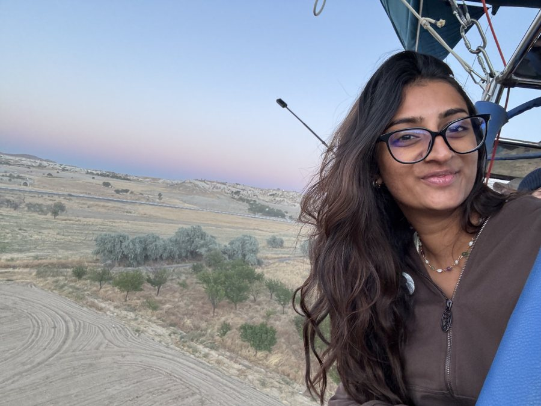
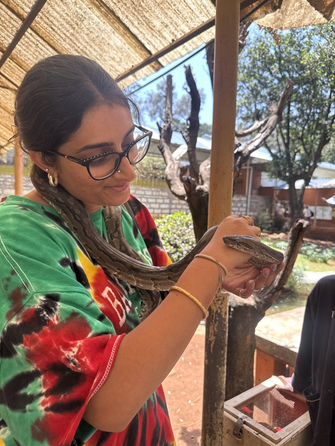

Hi! My name is SreeVidya Ganga (shree-VID-yah GUNG-ah), but I go by Vidya for short! I am passionate about computer science, AI Safety, and teaching, and I'm a bit of a systems nerd! I'm especially passionate about making models better for learners and promoting epistemic learning.
Outside of work I love EDM music, my plants, yoga, and traveling. Fun fact, I've spent the last six months backpacking the world across 12 countries! Peep my Instagram for some fun pictures.
B.A. Computer Science, B.A. Economics. Go Bears! 🐻
I did beep bop boop for a trading firm (on the Index Option Pricing team working on pricing system performance) to make pricing go brr [a very NDA compliant response clearly]. Now I am on garden leave.
I was on course staff for five semesters, two as head TA. Responsible for 2,000+ students and 40 TAs, writing exams, setting course content, and managing staff members.
Code:Builders is a Python curriculum I founded while working at IMC, for Chicago public high school students from Title I schools. I designed and led the curriculum for 30 students in the 2025 school year.
I led programming instruction for 30 students through office hours, code review, and debugging support.
A paper with the AddisCoder staff on what helped us teach algorithms to 150 high school students in Ethiopia: paper worksheets, mini-lectures in local languages, and catch-up labs.
When I was teaching in Ethiopia, a lot of our computer labs did not have access to internet. I wanted my students to still have the ability to visualize their code via PythonTutor (because I think this is a powerful tool for debugging), so I made a version of OnlinePythonTutor that could be run offline instead!
A Socratic tutoring system that constitutionally constrains the model to always respond with Socratic reasoning instead of directly handing out the answer.
My first steering-vector project: looking for a teacher direction in a language model and steering along it.
For Apart's Secret Loyalties Hackathon my team built a fine-tuned model with a secret loyalty that only shows up behind a trigger.
A benchmark I'm building with three collaborators that measures whether a model can talk a reviewer into approving bad code or blocking good code.
Does a model become misaligned from training on monsters, or only on malicious ones? Can training a model on Shrek text produce emergent misalignment?
An open-source tool that extracts activation-steering vectors and bakes them into LoRA adapters, turning inference-time steering into a weight change.
An app for staying in touch with friends. It helps me keep reaching out to the people I love.
I love taking photos, so my camera roll fills up with near-duplicates. This app puts two very similar photos side by side and asks whether to keep the left one, the right one, both, or neither.